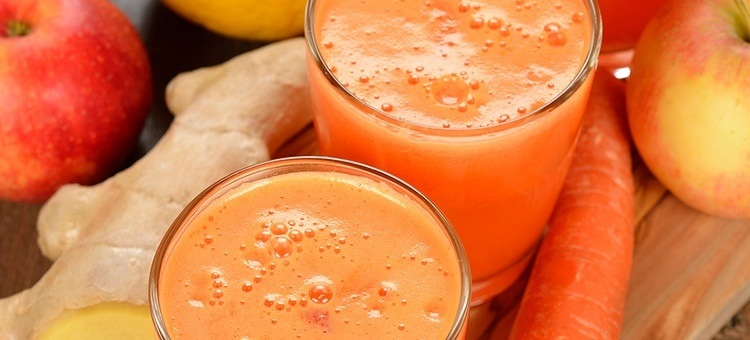

Carrot Juice Recipe
The Carrot Vitamin Vitality
INGREDIENTS
- 3 large carrots, halved
- 2 passion fruits, seeds scooped out
- 1/2 inch piece of ginger root
- 2 apples
PREPARATION
- Feed the carrots, then the passion fruit seeds, followed by the ginger root and then the apples.
- Pour over ice and enjoy the tangy goodness.
